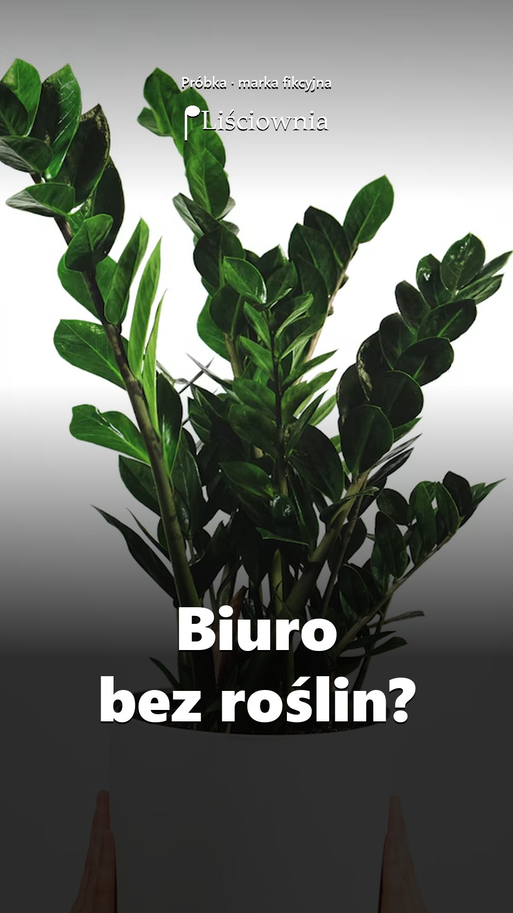
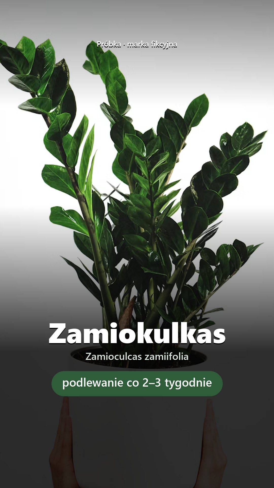
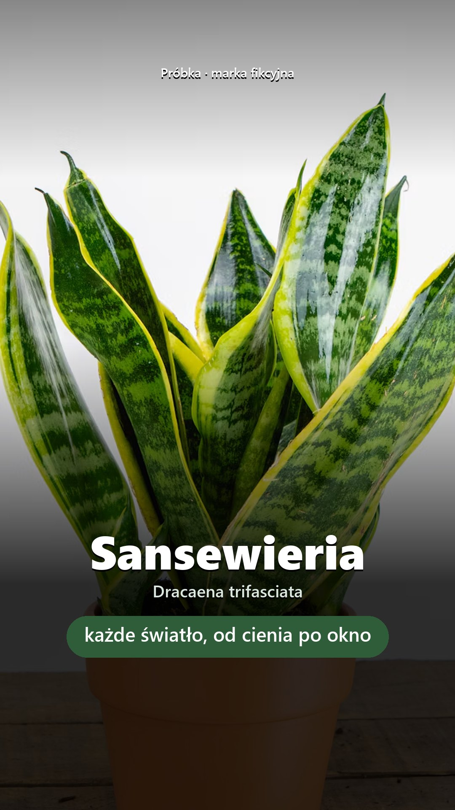
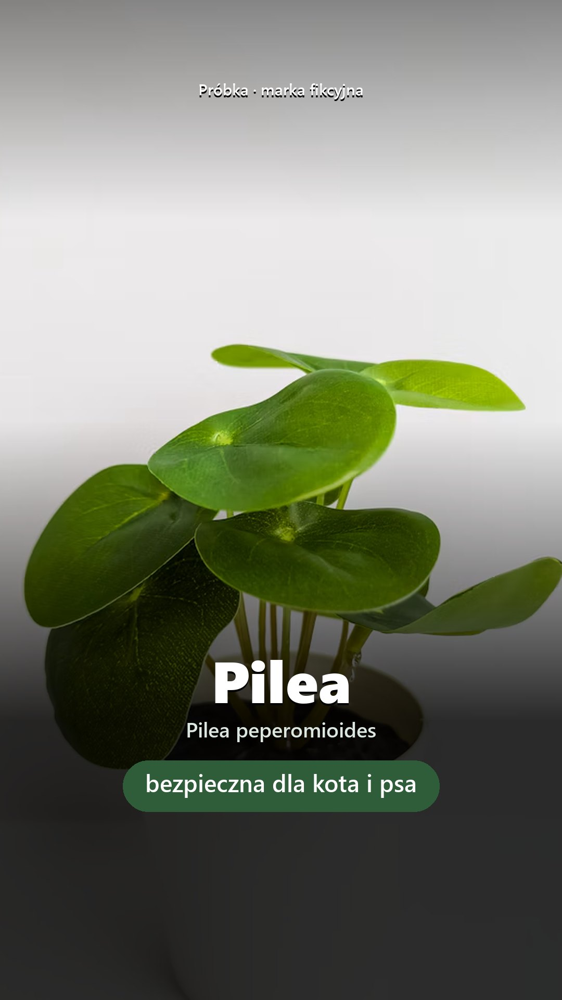
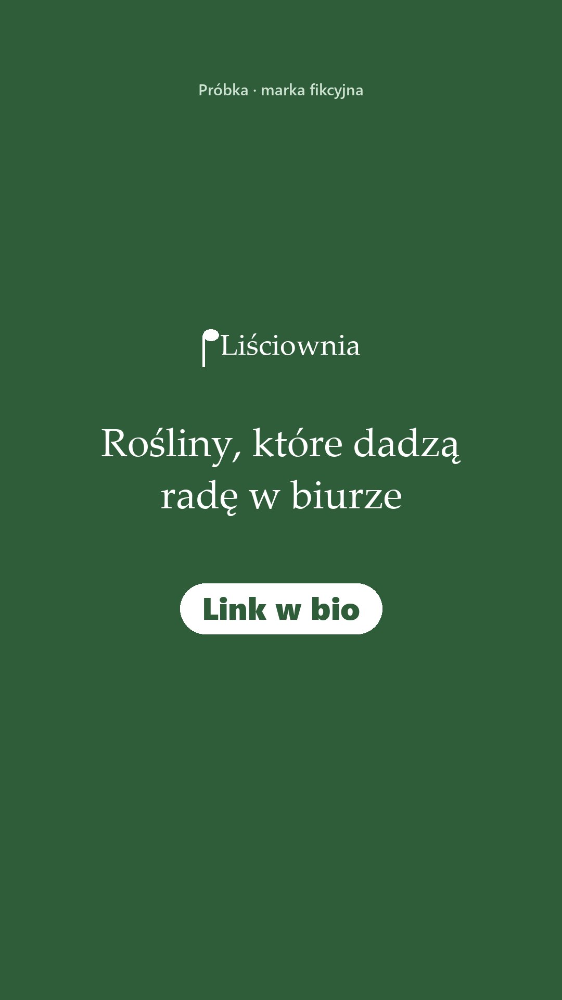

Próbka wideo · projekt koncepcyjny
15-sekundowy film na Reels, TikToka i Shorts zrobiony tylko ze zdjęć produktów – bez nagrywania i bez osób w kadrze. Hook w pierwszych sekundach, ruch kamery na zdjęciach, napisy czytelne bez dźwięku i plansza z wezwaniem do działania.
Marka „Liściownia” jest fikcyjna.

0–2,5 s · hook. Pytanie, które zatrzymuje przewijanie, i logo.

2,5–6 s. Zamiokulkas: nazwa i jedna korzyść.

6–9,5 s. Sansewieria: ten sam układ, inny ruch kamery.

9,5–12,5 s. Pilea: korzyść dla właścicieli zwierząt.

12,5–15 s. Plansza: obietnica marki i „Link w bio”.
Powolne zbliżenie i przesunięcie kadru na każdym zdjęciu daje ruch bez nagrywania. Wystarczą zdjęcia z Państwa sklepu.
Rolki często ogląda się bez dźwięku, więc cała treść jest w napisach: duże, z cieniem i ciemnym tłem pod spodem.
Napisy są poza górnym i dolnym pasem, który zasłaniają przyciski i podpis w aplikacji.
Film jest bez dźwięku; muzykę dodaje się przy publikacji z biblioteki utworów dostępnych dla kont firmowych na TikToku lub Instagramie, na ich licencji.